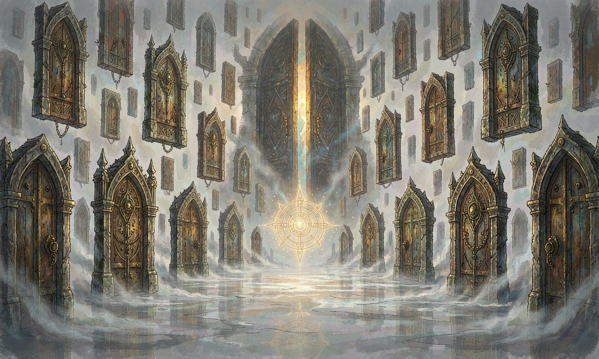

🌀 核心据点与避难所
概述灵廊是玩家的核心据点，是暂时脱离恩格海姆纷争的避风港
所有权玩家独有特权，任何NPC都不能进入（雕刻家除外）
进入方式
▸死亡后强制进入
▸通过契约 '灵廊' 主动进入（每日可使用 1 次，需5分钟生成黑色传送门）
▸偶尔被雕刻家剧情召回
灵廊功能
▸"有限探索除雕刻家据点外，存在可探索的迷雾区域"
▸"战斗灵廊内可以战斗，但会受到雕刻家严厉惩罚"
▸"灵契武装打造后期开放，由雕刻家打造超越神话级的装备"
▸"契约修改仅限一次，让玩家重新选择初始契约，新契约从头开始"
▸"种田空间玩家拥有一片专属种植空间"
灵廊战斗惩罚
触发雕刻家出手干预，双方暂时失去所有行动能力
代价扣除当前意志值的 50%，陷入虚弱持续游戏内 1 天
功能影响灵廊内所有功能暂时禁用（无法使用传送门、种植等）
长时间停留副作用会让自己陷入一种虚无幻觉，需定期返回现实世界
灵廊深处
结构无限层，越深入资源品质越高，但意志点数与契约阶位要求递增
特征
▸时间流速与外界不同，越深处越缓慢
▸残留多次坍塌前的契约规则片段
▸存在回响实体（契约规则过度沉积产生的半意识体）
